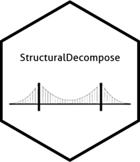

Note: Website documentation is still under construction.
StructuralDecompose is an algorithm suited to the decomposition of a time series into its component terms of trend, seasonality, and residuals. It is well suited to decompose a series in the presence of significant level shifts.
The algorithm outputs the decomposed trend, seasonality, residuals, as well as anomalies detected.
Installation
The StructuralDecompose package is now available on CRAN.
You can install it like so:
| Type | Source | Command |
|---|---|---|
| Release | CRAN | install.packages("StructuralDecompose") |
| Development | GitHub | devtools::install_github("StructuralDecompose/StructuralDecompose") |
Once installed, load the package using:
```r library(StructuralDecompose)